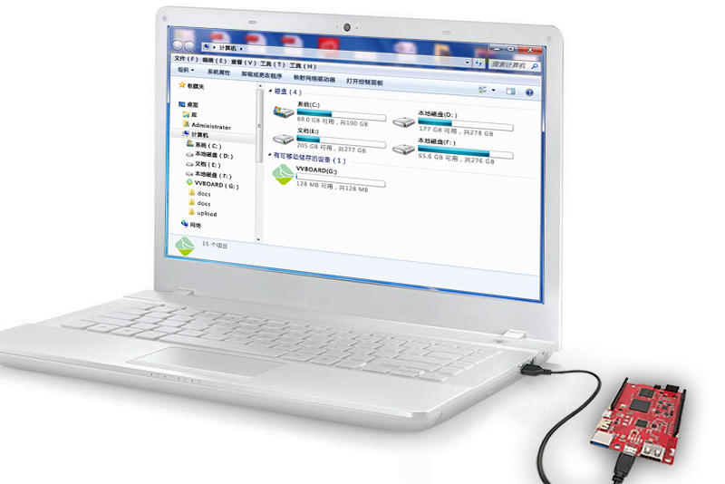
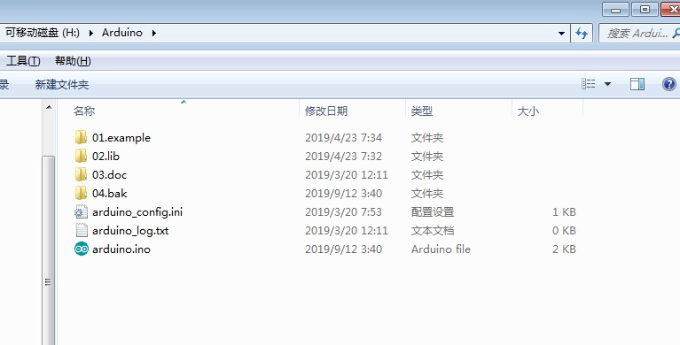
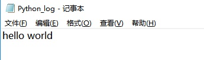

2. U盘模式¶
虚谷号可以通过U盘模式进行编程和设置。不需要接上显示器和鼠标键盘，即可对虚谷号编程，这是虚谷号在教学应用方面的最大特色。
U盘模式也称DAP虚拟磁盘烧录模式，是指虚谷号通过USB线将OTG口（两个USB口中间的那个micro usb口）和电脑USB口连接后，电脑上将出现一个虚拟的U盘。将Arduino、Python代码复制到U盘的相应目录后，按下RST键，U盘的盘符将暂时消失，当再次出现盘符时，程序已经成功执行。

2.1. 应用场景¶
虚谷号是为大班教学设计的。在机房里，如果虚谷号要接上鼠标键盘显示器才能使用，这样的实施条件是非常高的。首先机房中要准备原数量一倍以上的显示器，这几乎是不可能的。哪怕两人为一组，这些显示器也没有地方摆放。加一个视频分配器吗？看起来也不可行，因为机房的管理工作将非常混乱。其次，机房中还要准备大量的鼠标键盘，这也是做不到的。正是这样的因素，导致树莓派为代表的Pi系列开源硬件难以在中小学推广。
由此可见，不需要接上显示器和鼠标键盘，即可使用虚谷号，这是很重要的教学功能。借助这一功能，虚谷号成为和Arduino、micro:bit和掌控板一样的，即插即用、使用方便的开源硬件了。
场景1:
大班教学应用。教师不需要改变现有的机房条件和教学习惯，把虚谷号作为类似掌控板的智能终端来教学。但是虚谷号的CUP算力又远超常见的开源硬件，可以运行标准版本的Python程序。
场景2:
快速移植应用。当用户在电脑上调试好Python或者Ardunio代码后，用U盘模式可以快速将代码移植（部署）到虚谷号上。毕竟在迷你电脑上编程是一件很痛苦的事情。
2.2. 功能介绍¶
设置虚谷号的系统参数。
设置虚谷号的Wi-Fi参数，查看IP地址；
设置是否启动Jupyter、SIoT等系统服务。
编程。可以给虚谷号编程。
编写Arduino代码；
编写Python代码。
2.3. 操作流程¶
1）设置Wi-Fi参数
更改U盘vvboard文件夹的”vvBoard_config.ini”中，SSID和SSID_PSD。短按RST键重启U盘服务，然后在U盘vvboard文件夹的“wifi_log.txt”中，找到IP地址。
注1：目前虚谷号仅支持2.4GHz的Wi-Fi。
注2：如果Wi-Fi需要二次身份认证（如校园网等），只能通过主机模式连接，不能用U盘模式配置。
注3：在修改完vvBoard_config文件后，如果短按RST键后没有连接成功，可以多尝试几次。如果还不行，请仔细检查vvBoard_config文件中的内容是否被正确地修改，可以尝试将虚谷号断电重启，或长按RST键10秒重启。

2）烧录Arduino代码
复制标准arduino代码（例：Blink.ino）到U盘的Arduino文件夹下，命名为“arduino.ino”，按下RST键，U盘的盘符将暂时消失，约十秒钟左右，板子上有LED快速闪烁，表示虚谷号将代码写入板载Arduino。
如果没有发现板子上的LED快速闪烁，请查看arduino.ino是否移动到04.bak,没有则说明程序没有去写入,请查看你的文件命名是否正确。

如果led灯快闪闪烁后，没有亮一秒灭一秒，说明写入失败，打开log文件检查原因。烧录成功则led灯亮一秒熄灭一秒。
3）运行Python文件
进入到Python目录下新建一个test.py文件

打开此文件编辑一个python代码（也可在其它编辑器上写完后粘贴过来）保存

打开python_config.ini文件，修改Python=test.py和Run_time=5并保存
注：python_config.ini中有个Run_time参数，表示等待多少时间再出现U盘（出现U盘后，就不能输出调试信息了），参数为0时不会打印log，只会打印代码格式报错信息。

短按rst键，待vvBoard刷新后进入到Python文件夹下会看到一个python_log文件，python程序的输出内容还有错误信息全都保存在此文件中，打开此文件会发现python程序打印的hello world保存在了此文件中
注：python_config.ini中有个Run_time参数，表示等待多少时间再出现U盘（出现U盘后，就不能输出调试信息了），参数为0时不会打印log，只会打印代码格式报错信息。
虚谷号内置的Python版本是3.5，已经内置了常见的Python库，具体请参考“软件介绍”的Python部分。
2.4. U盘资源简介¶
介绍几个重要的文件：
arduino_config.ini:配置运行的arduino程序（当运行的程序不是Arduino.ino或者arduino.ino形式命名则需配置）
arduino_log.txt:arduino代码的编译、烧录的回写日志
Arduino/04.bak：存放刚运行完的程序，下次运行新的程序将会被替换
python_config.ini:配置运行的python程序（当运行的程序不是main.py或者Main.py形式命名则需配置）
python_log.txt:python程序检测发现代码格式错误的回写日志
vvBoard_config.ini:配置WiFi连接及打开jupyter和siot服务
wifi_log.txt:wifi连接上回写的连接日志
Notepad2查看代码的文本编辑器，如果电脑打开代码没有换行可以使用这个工具打开
关于U盘文件的详细介绍，请浏览本文档的第八部分。
2.5. U盘烧录的说明¶
1、Python是如何实现与Arduino互动的？
虚谷号开发了一个xugu库，用来与Arduino互动。如果Python代码中调用了xugu库，虚谷号系统将判断板载Arduino是否已经写入firmata协议（如果没有则自动写入，要延时一定的时间，并且可以看到板子上的LED闪烁），然后运行代码。
关于这一方面的内容，请参考GPIO部分。
2、如何实现python和Arduino的自定义互动？
（1）先复制标准Arduino代码，虚谷号将代码写入板载Arduino。
（2）再复制标准python代码，虚谷号开始运行Python代码。
（3）如果标准的Arduino和python代码都复制了，虚谷号会先运行Arduino代码，再运行Python代码。
注意：如果Arduino和Python文件有管脚定义冲突，最终python会覆盖Arduino，导致实现结果不理想。有时发现Arduino程序没有正常运行，可能是由于在python文件夹内有多余的py文件（上一次运行后没有删除），导致覆盖了Arduino程序。
3、如何实现用Python代码与板载Arduino做更复杂的互动？比如在“厚物”的OLED屏上显示文字等。
需要另外编写Arduino程序，通过串口和板载Arduino交互。很多虚谷号的爱好者在开发这方面的范例程序。其实在网上能够找到很多关于电脑（Python）和Arduino互动的例子，都可以移植到虚谷号上。